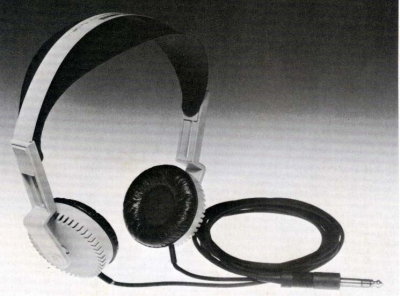
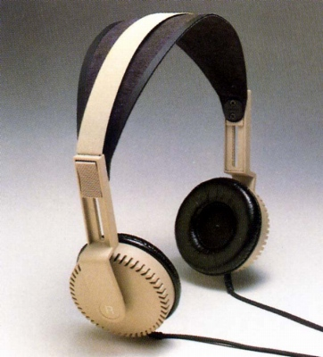
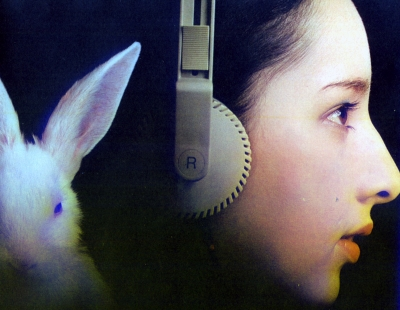
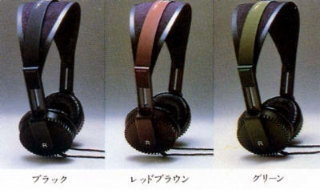
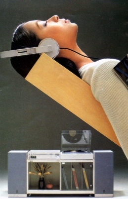
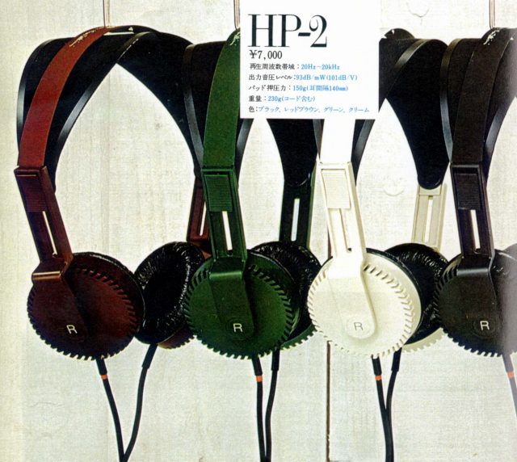

HP-2




■価格 7,000円
■型式 オルソダイナミック型半開放タイプ
■振動板 46�o 12ミクロン ポリエステル膜
■インピーダンス 150Ω
■再生周波数帯域 20-20,000Hz
■許容入力 3,000mW
■感度 93ｄB/mW
■コード 2.4ｍストレートコード
■重量 190g（コード含まず） 230g（コード含む）
■発売 1975年頃
■販売終了 1985年頃
■備考
ボディカラーはブラックの他、レッドブラウン・グリーン・クリーム
なお、発売時のカタログではフェライトマグネットの音孔は角形だが、実際
の製品ではHP-1と同様の丸形のモデルがあるらしい。

